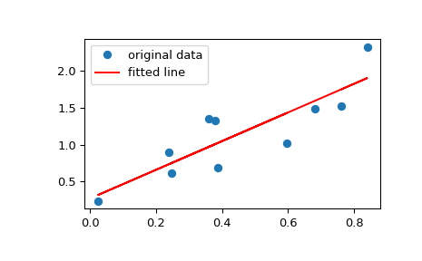

scipy.stats.linregress¶
-
scipy.stats.linregress(x, y=None)[source]¶ Calculate a linear least-squares regression for two sets of measurements.
- Parameters
- x, yarray_like
Two sets of measurements. Both arrays should have the same length. If only x is given (and
y=None), then it must be a two-dimensional array where one dimension has length 2. The two sets of measurements are then found by splitting the array along the length-2 dimension. In the case wherey=Noneand x is a 2x2 array,linregress(x)is equivalent tolinregress(x[0], x[1]).
- Returns
- slopefloat
Slope of the regression line.
- interceptfloat
Intercept of the regression line.
- rvaluefloat
Correlation coefficient.
- pvaluefloat
Two-sided p-value for a hypothesis test whose null hypothesis is that the slope is zero, using Wald Test with t-distribution of the test statistic.
- stderrfloat
Standard error of the estimated gradient.
See also
scipy.optimize.curve_fitUse non-linear least squares to fit a function to data.
scipy.optimize.leastsqMinimize the sum of squares of a set of equations.
Notes
Missing values are considered pair-wise: if a value is missing in x, the corresponding value in y is masked.
Examples
>>> import matplotlib.pyplot as plt >>> from scipy import stats
Generate some data:
>>> np.random.seed(12345678) >>> x = np.random.random(10) >>> y = 1.6*x + np.random.random(10)
Perform the linear regression:
>>> slope, intercept, r_value, p_value, std_err = stats.linregress(x, y) >>> print("slope: %f intercept: %f" % (slope, intercept)) slope: 1.944864 intercept: 0.268578
To get coefficient of determination (R-squared):
>>> print("R-squared: %f" % r_value**2) R-squared: 0.735498
Plot the data along with the fitted line:
>>> plt.plot(x, y, 'o', label='original data') >>> plt.plot(x, intercept + slope*x, 'r', label='fitted line') >>> plt.legend() >>> plt.show()
Example for the case where only x is provided as a 2x2 array:
>>> x = np.array([[0, 1], [0, 2]]) >>> r = stats.linregress(x) >>> r.slope, r.intercept (2.0, 0.0)